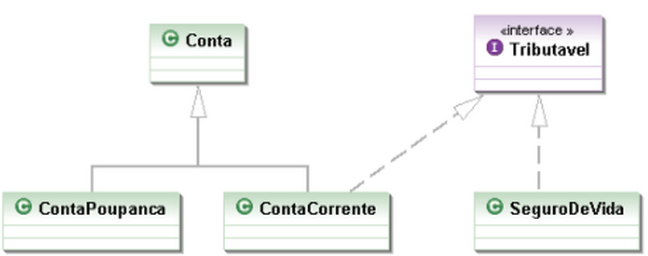
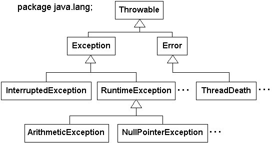

lista 1 de exercicios.Entrega até dia 05/09/2014. Pacote gabarito exercício 2 Notas
lista 2 de exercicios.Entrega até dia 16/09/2014. Gabarito Gabarito ex. 10
lista 3 de exercicios.Entrega até dia 03/11/2014.
Gabarito prova 01
Códigos disponibilizados para esta aula (herança).
O conceito de herança esta fundamentado na definição de uma classe com base em outra.
A outra classe usada como referencial pode ser chamada de superclasse, classe-mãe, classe-base ou generalização.
A nova classe criada a partir da outra passa a ser subclasse, classe-filha, classe derivada ou especialização. Podemos redefinir métodos e criar novos atributos na subclasse.
Sobreposição de métodos é quando em herança podemos definir novos métodos e atributos na subclasse, podemos também redefinir um método na subclasse com a mesma assinatura do método da superclasse.
Quando criamos um objeto de uma subclasse, devemos lembrar que ao executar o seu construtor primeiramente será executado o construtor da superclasse de forma automática.
Podemos executar na subclasse qualquer construtor da superclasse utilizando o comando super.
Uma classe abstrata é desenvolvida para representar classes e conceitos abstratos.
A classe abstrata é sempre uma superclasse que não permite que nenhum objeto seja criado a partir dela, ou seja, não se pode executar a operação de new usando uma classe abstrata.
Os modificadores de acesso são palavras reservadas que modificam a forma de acesso a classes, métodos e/ou atributos.
Classe final é quando uma classe não pode ser herdada por nenhuma outra. Um exemplo de classe final é a String.
A razão para uso do modificador final é garantir certas regras de segurança ou projeto sejam seguidas.
Métodos do tipo final não podem ser redefinidos, ou seja, caso você herde de uma classe que contenha métodos com esse modificador, esses métodos não podem ser sobrescritos (override) na subclasse.
Por exemplo, você possui um método final
validarSenha(), alguém mal-intencionado poderia alterar esse método em uma subclasse e passar a usar esse método em vez do definido pelo arquiteto do sistema.
imprimirMatricula, onde os atributos nome e CPF devem ser impressos.imprimirMatricula, onde os atributos nome e código de matricula geral do docente devem ser impressos.imprimirMatricula, onde os atributos nome e código de matricula geral do aluno devem ser impressos.devolver();renovar(quantidadeDias);Formas de Herança:
- Especialização. Provavelmente, o uso mais comum de herança é por especialização. Neste uso, a classe nova é uma forma especializada da classe pai, mas satisfaz as especificações da classe pai em todos os aspectos relevantes.
- Generalização. Usar herança por generalização é, de certa forma, o oposto de especialização. Aqui, uma subclasse estende o comportamento da classe pai para criar um tipo mais geral de objeto. Generalização é frequentemente aplicada quando construímos uma base de classes existentes que não desejamos modifícar ou não podemos modifícar.
- Limitação. Limitação ocorre quando o comportamento da subclasse é menor ou mais restritivo do que o comportamento da classe pai. Assim como generalização, limitação ocorre mais frequentemente quando um programador está construindo sobre uma base de classes existentes que não deveria, ou não pode, ser modifícada.
- Especificação. Um uso frequente de herança é para garantir que classes mantenham uma certa interface comum, isto é, implementem os mesmos métodos. A classe pai pode ser uma combinação de operações implementadas e operações que são "deixadas" para ser implementadas pelas classes fílhas. Frequentemente, não há mudança de interface de nenhuma ordem entre a classe pai e a classe fílha: a classe fílha meramente implementa o comportamento descrito, mas não implementado, pela classe pai. Especificação é de fato um caso especial de especialização, exceto que as subclasses não são refinamentos de um tipo existente, mas sim realizações de uma especificação abstrata e incompleta. Em tais casos, a classe pai é algumas vezes conhecida como classe de especificação abstrata.
- Combinação. Uma situação comum é uma subclasse representar uma combinação de características de duas ou mais classes pai. Um monitor de ensino pode possuir características tanto de um professor quanto de um estudante e pode, portanto, comportar-se como ambos. A capacidade de uma classe herdar de duas ou mais classes pais é conhecida como herança múltipla.
A Regra "é um" e a Regra "tem um":
- Um entendimento de duas formas diferentes de relacionamento entre classes e objetos é fundamental para saber como e quando aplicar técnicas de reuso de software orientado a objetos. Estes dois relacionamentos são conhecidos informalmente como "é um" e "tem um" (ou "parte de").
- O relacionamento "é um" entre dois conceitos é satisfeito quando o primeiro é uma especialização do segundo.
- Por exemplo. Florista é um Vendedor, um Cachorro é um Mamífero e assim por diante.
- Para determinar se o conceito X é uma instância especializada do conceito Y, simplesmente forme a sentença "Um X é um Y". Se a sentença "soa bem", isto é, se ela parece corresponder à experiência do dia-a-dia, você pode assumir que X e Y possuem o relacionamento é um.
- O relacionamento tem um, por outro lado, é satisfeito quando o segundo conceito é um componente do primeiro, mas os dois não são, em qualquer hipótese, a mesma coisa, não importa quão abstrata seja a generalidade. Por exemplo, um Carro tem um Motor e, claramente, não faz sentido dizer que um Carro é um Motor ou um Motor é um Carro. Entretanto, um Carro é um Veículo, que por sua vez é um Meio De Transporte.
- Mais uma vez, o teste para o relacionamento tem um é simplesmente formar uma sentença da forma "um X tem um Y" e deixar o senso comum dizer se o resultado soa razoável.
Benefícios do Uso de Herança:
- Reusabilidade de código. Quando comportamento é herdado de uma outra classe, o código que fornece aquele comportamento não precisa ser reescrito. Isto parece óbvio, mas as implicações são importantes. Muitos programadores gastam muito do tempo deles reescrevendo código que eles escreveram muitas vezes antes. Por exemplo, para encontrar um padrão em uma cadeia ou inserir um novo elemento em uma tabela. Com técnicas de orientação a objetos, estas funções podem ser escritas apenas uma vez e reutilizadas.
- Compartilhamento de código. Compartilhamento de código ocorre em muitos níveis com técnicas orientadas a objetos. Uma forma de compartilhamento se dá quando muitos usuários ou projetos podem usar as mesmas classes. Uma outra ocorre quando duas ou mais classes desenvolvidas por um único programador como parte de um projeto herda de uma única classe pai. Quando isto acontece, dois ou mais tipos de objetos compartilharão o código que eles herdaram.
- Consistência de interface. Quando duas ou mais classes herdam da mesma superclasse, podemos estar certos de que o comportamento que elas herdaram sería o mesmo em todas as classes. Logo, é mais fácil garantir que interfaces para objetos semelhantes sejam, de fato, semelhantes e que o usuário não se depare com um conjunto confuso de objetos que são quase os mesmos mas se comportam e interagem de forma bem diferente.
- Componentes de software. Herança permite que programadores construam componentes de software reutilizáveis. O objetivo é permitir o desenvolvimento de aplicações novas que requeiram pouca ou nenhuma codificação. Várias bibliotecas de classes reutilizáveis já se encontram disponíveis comercialmente e podemos esperar muito mais com o passar do tempo.
- Prototipação rápida. Quando um sistema de software é grandemente construído com base em componentes reutilizáveis, o tempo de desenvolvimento pode ser concentrado em entender a parte nova do sistema. Logo, sistemas de software podem ser gerados mais facilmente e mais rapidamente, levando a um estilo de programação conhecido como prototipação rápida ou programação exploratória.
- Ocultamento de informação. Um programador que reutiliza um componente de software necessita apenas entender a natureza do componente e sua interface. Não há a necessidade do programador ter informação detalhada a respeito de fatos como, por exemplo, as técnicas usadas para implementar o componente. Logo, a interconexão entre sistemas de software é reduzida e, consequentemente, a complexidade também é reduzida.
Custos do Uso de Herança:
- Velocidade de execução. Difícilmente, ferramentas de software de propósito geral são tão rápidas quanto aquelas desenvolvidas cuidadosamente para um propósito específico. Logo, métodos herdados, que devem lidar com subclasses arbitrárias são frequentemente mais lentos do que código especializado. Ainda assim, a preocupação com eficiência é geralmente desnecessária. Primeiro, a diferença e frequentemente pequena. Segundo, a redução em velocidade de execução pode ser balanceada por um aumento da velocidade de desenvolvimento de software. Finalmente, a maioria dos programadores não possui a mínima ideia de como o tempo de execução está sendo usado no programa. É muito melhor desenvolver um sistema que funcione, monitorá-lo para descobrir onde o tempo de execução está sendo usado e melhorar aquelas seções, do que gastar uma quantidade desordenada de tempo se preocupando com eficiência no início do projeto.
- Tamanho do programa. O uso de qualquer biblioteca de software em geral acarreta o aumento de tamanho do programa, o que não acontece com sistemas construídos através de um projeto específico. Embora este gasto possa ser substancial, quando o custo de memória for reduzido a níveis insignificantes. Conter custos de desenvolvimento e produzir código de alta qualidade e livre de erro são preocupações que se tornaram muito mais importantes do que limitar o tamanho dos programas.
- Overhead de envio de mensagens. Muito do que tem sido feito do fato que envio de mensagens é por natureza uma operação mais custosa do que chamada de procedimento. Assim como velocidade de execução, entretanto, a preocupação neste caso também é supervalorizada, pois a diferença nos custos de envio de mensagens e chamada de procedimento é marginal. Talvez, duas ou três instruções adicionais de linguagem de montagem e um gasto adicional de 10 porcento do tempo total. Este custo, como muitos outros, pode ser balanceado pelos benefícios das técnicas de orientação a objetos.
- Complexidade do programa. Embora a programação orientada a objetos seja tida como uma solução para a complexidade do software, o uso demasiado de herança pode simplesmente substituir uma forma de complexidade por outra. Entender o uso de controle de um programa que utiliza herança pode requerer várias varreduras no grafo de herança. Isto é conhecido como o problema do iô-iô.
O termpo polimorfismo é originário do grego e significa "muitas formas": poli significa muitas e morphos significa formas.
Em linguagens de programação, um objeto polimórfico é qualquer entidade, tal como uma variável ou argumento de função, que pode armazenar valores de tipos diferentes durante o curso de execução de um programa. Funções polimórficas são aquelas que possuem argumentos polimórficos.
Polimorfismo é um resultado natural do relacionamento "é um" e dos mecanismos de passagem de mensagem, herança e substituição.
A decisão sobre qual método executar, o da superclasse ou da subclasse ocorre em tempo de execução, ou seja, a chamada ao método permanece o mesmo, o que varia é a execução do operador
new.public class Pessoa { private String nome; private String endereco; private int rg; public void imprime(){ System.out.println("Método imprime da classe Pessoa!"); } } public class Aluno extends Pessoa{ @Override public void imprime(){ System.out.println("Método imprime da classe Aluno!"); } } public class Main { public static void main(String args[]){ Pessoa pessoa = new Pessoa(); Pessoa aluno = new Aluno(); pessoa.imprime(); aluno.imprime(); } }
Polimorfismo e construtores:
- Toda Classe tem pelo menos um construtor, que deve ser definido com o mesmo nome da classe.
- Toda vez que o objeto for criado pelo operador
new, o método construtor correspondente será executado automaticamente.public class Pessoa { public Pessoa(){ System.out.println("Início do construtor da classe Pessoa!"); imprime(); System.out.println("Fim do construtor da classe Pessoa!"); } } public class Aluno { public Aluno(){ System.out.println("Início do construtor da classe Aluno!"); imprime(); System.out.println("Fim do construtor da classe Aluno!"); } } public class Main { public static void main(String args[]){ Pessoa aluno = new Aluno(); } }
O polimorfismo de sobrecarga ocorre quando um nome de função está associado a mais de dois corpos de função, ou seja, quando um nome de função for usado mais de uma vez com diferentes tipos de parâmetro.
public class Pessoa { public void soma(int a, int b){ System.out.println("A soma dos inteiros é: "+(a+b)); } public void soma(double a, double b){ System.out.println("A soma dos reais é: "+(a+b)); } } public class Main { public static void main(String args[]){ Pessoa aluno = new Aluno(); aluno.soma(32, 32); aluno.soma(32.43, 32.34); } }
Algumas linguagens de programação permitem que haja uma conversão implícita entre certos tipos de dados.
Estas conversões implícitas são realizadas automaticamente pelo compilador e são denominadas de coerção.
Coerções são limitadas a situacões onde não há perda de informação, como na conversão de um valor inteiro para o valor real correspondente.
public class Pessoa { public void soma(double a, double b){ System.out.println("A soma dos reais é: "+(a+b)); } } public class Main { public static void main(String args[]){ Pessoa aluno = new Aluno(); aluno.soma(32, 32); } }No caso acima, o valor 32 foi coargido para 32.0 pelo compilador JAVA.
Segundo caso:
public class Pessoa { public void soma(int a, int b){ System.out.println("A soma dos inteiros é: "+(a+b)); } public void soma(double a, double b){ System.out.println("A soma dos reais é: "+(a+b)); } } public class Main { public static void main(String args[]){ Pessoa aluno = new Aluno(); aluno.soma(7.5,4.3); aluno.soma(7.5,4); aluno.soma(7,4.3); aluno.soma(7,4); } }Aqui, notamos a presença tanto de sobrecarga quanto de coerção, pois no segundo e no terceiro envios da mensagem soma, o valor inteiro foi coargido para o real correspondente. Já no primeiro e no último envio da mensagem soma, temos apenas sobrecarga.
1) Qual é a saída produzida pela aplicação a seguir? Justifique sua resposta.
public class Sobrecarga {
public static void main(String args[]) {
class A {
public int foo(int i) {
return i + 1;
}
}
class B extends A {
public int foo(float f) {
return (int) (f + 10);
}
}
B b = new B();
System.out.println("Surpresa: " + b.foo(2));
}
}
2) Considere o trecho de código dado a seguir:
public class Super {
public Super() {
printThree();
}
void printThree() {
System.out.println("three");
}
}
public class Test extends Super {
int indiana = (int) Math.PI;
public static void main(String args[]) {
Test t = new Test();
t.printThree();
}
void printThree() {
System.out.println(indiana);
}
}
O encapsulamento é o processo de proteger os membros de uma classe (atributos e métodos), permitindo que somente os membros necessários (públicos) sejam acessados pelos usuários da classe.
O encapsulamento apresenta as seguintes vantagens:
- Facilidade de manutenção. A manutenção de classes pode ser efetuada de maneira isolada, ou seja, se um atributo tiver seu formato alterado, os usuários dessa classe poderão continuar a usá-la sem se preocupar com a alteração.
- Redução do acoplamento. Quanto menor o acoplamento entre classes, maior pode ser a reutilização dessa classe.
- Segurança das informações. Toda comunicação com o objeto ocorre por meio dos métodos modificadores e de acesso (setXXX() e getXXX()), oferecendo segurança na atribuição de novos valores.
Há três modificadores de acesso que devem ser explicitamente informados na criação de uma classe, método ou atributo. Esses modificadores são conhecidos por:
- public. O acesso é liberado para qualquer nível de acesso.
- protected. O acesso é protegido a nível de pacote e herança (dentro ou fora do mesmo pacote).
- private. Quando declarado a classe, método ou atributo são extritamente reservadas a classe em que são declaradas.
A ausência do modificador de acesso faz o membro ser friendly (visível ao nível de pacote).
Acoplamento fraco e forte:
Acoplamento forte (Exemplo 1):
class Servidor { public void mensagem(MeuTipo x) { // código aqui x.façaAlgo(Object dados); // dados e x estão acoplados // (se interface de dados mudar x terá que mudar) // mais código } }Acoplamento forte (Exemplo 2):
- Objeto a manda uma mensagem para objeto b
- b usa um parâmetro da mensagem para decidir o que fazer
class Lampada { public final static int ON = 0; public void setLampada(int valor) { if(valor == ON) { // liga lampada } else if(valor == 1) { // desliga lampada } else if(valor == 2) { // pisca } } } Lampada lampapa = new Lampada(); lampada.setLampada(Lampada.ON); lampada.setLampada(2);Acoplamento fraco (Exemplo 2):
- Solução: decompor a operação em múltiplas operações primitivas
class Lampada { public void on() { // liga lampada } public void off() { // desliga lampada } public void pisca() { // pisca } } Lampada lampada = new Lampada(); lampada.on(); lampada.pisca();
1) Considere o código fonte a seguir e faça as modificações necessárias utilizando POO.
package venda;
private class Carro {
public int ano;
public String modelo;
public void setAno(int ano){...}
public int getAno(){...}
private void setModelo(String modelo){...}
private void getModelo(){...}
}
public class Uno extends Carro {
public int numeroSerie;
public Uno(){
super.getModelo();
}
public void setNumeroSerie(int numeroSerie){...}
public int getNumeroSerie(){...}
}
protected class Gol extends Carro {
public int numeroSerie;
public void setNumeroSerie(int numeroSerie){...}
public int getNumeroSerie(){...}
}
package aluguel;
private class golVermelho extends Gol {
...
}
private class golVerde extends Gol {
...
}
public class golVerde2 extends golVerde {
...
}
2) Considere o trecho de código dado a seguir. Faça um refactory neste código diminuindo o nível de acoplamento.
public class Pessoa{
private String nome;
private String endereco;
public Pessoa(String nome){
this.nome=nome;
}
public Pessoa(){
this.nome="Não informado"
}
.
.
.
}
public class Escola{
private String nome;
private String endereco;
.
.
.
}
public class Aluno{
private Pessoa nome;
private Escola escola;
public Aluno(int opcao, String disciplina){
if(opcao==1)
//realiza matricula
else if(opcao==2)
//excluí matricula
else if(opcao==3)
// expulsa aluno
}
public void insereConceito(Double nota){
if(nota>=8)
//conceito A
else if(nota >=6)
//conceito B
else
//conceito C
}
}
Um interface em Java não representa exatamente uma classe, mas deve ser gravada em um arquivo próprio com a extensão .java.
Em uma interface definimos somente atributos estáticos e constantes e os métodos são todos abstratos.
Para definir uma interface devemos usar a palavra reservada interface no lugar da palavra class.
public interface Mobilidade { }Para que um classe classe possa usar uma interface é necessário que a classe implemente a interface com o uso da palavra reservada implements.
public class Robo implements Mobilidade { }Um exemplo prático do uso de interfaces é a API JDBC presente na linguagem Java. Todos os fabricantes como Sybase, Oracle, Sun e MS SQL Server implementam as interfaces definidas pela API JDBC, mas cada um implementa os métodos dessas interfaces de uma forma diferente.
A vantagem está em tornar o uso da API JDBC totalmente independente da implementação usada.
Uma interface tem as seguintes características:
- Uma interface não pode ser instanciada, mas podem ser definidas referências do seu tipo:
public interface Mobilidade { public void andarFrente(); public void andarTras(); public void parar(); public void virarDireita(int graus); public void virarEsquerda(int graus); } public class Robo implements Mobilidade{ } public class Main { public static void main(String args[]){ Mobilidade robo= new Robo(); } }- Todos os métodos definidos são implicitamente do tipo public e abstract. Os métodos não podem ter corpo definido, somente definimos sua assinatura:
public interface Mobilidade { public void andarFrente(); public void andarTras(); public void parar(); public void virarDireita(int graus); public void virarEsquerda(int graus); }- Uma interface pode estender mais de uma interface. É importante observar que uma classe pode estender (herdar) somente de uma outra classe.
public interface Mobilidade { public void andarFrente(); public void andarTras(); public void parar(); public void virarDireita(int graus); public void virarEsquerda(int graus); } public interface Trajeto { public void destino(Double latitude, Double longitude); } public class Carro implements Mobilidade, Trajeto{ }- A classe que implementa uma interface deve obrigatoriamente implementar todos os métodos definidos na interface.
- Uma interface é formalmente uma classe abstrata, somente com atributos contantes (final) e estáticos (static) e métodos sem corpo. Estes deverão ser implementados pelas classes que irão implementar a interface. É importante observar que os atributos na interface precisam ser inicializados:
public interface MinhaInterface { public static final int var01 = 100; public static final Double var02 = 90.90; }
1) Crie um projeto interfaces e crie a interface AreaCalculavel:
interface AreaCalculavel {
double calculaArea();
}
2) Nosso banco precisa tributar dinheiro de alguns bens que nossos clientes possuem. Para isso, vamos criar uma interface Tributavel:
public interface Tributavel {
double calculaTributos();
}
Alguns bens são tributáveis e outros não, ContaPoupanca não é tributável, já para ContaCorrente você precisa pagar 1% da conta e o SeguroDeVida tem uma taxa fixa de 42 reais.

Baseado no diagrama de classes acima, implemente as classes e métodos necessários para o cálculo dos tributos do nosso banco.
O tratamento de excessão oferece um poderoso mecanismo para evitar que um programa Java pare de funcionar de forma inesperada e permite que o erro seja analisado e o programa continue a ser executado normalmente.
Um excessão deve ser vista como um retorno alternativo da execução de algum método.
- O processo de gerar uma exceção é chamado de lançamento de exceção, e o de processar uma excessão é chamado de captura da exceção.
import java.util.Scanner; public class ExemploCapturaExcecao { public static void main(String[] args) { double nota = 0.0; System.out.println("Entre com uma nota: "); Scanner s = new Scanner(System.in); nota = s.nextInt(); try { if (nota >= 70) { // lancando a excecao throw new Exception("Aprovado"); } else if ((nota >= 40) && (nota < 70)) { throw new Exception("Exame"); } else { throw new Exception("Reprovado"); } // capturando a excecao } catch (Exception e) { System.out.println(e.getMessage()); } } }
Comandos try e catch
- Toda exceção lançada representa um objeto que armazena informações sobre a ocorrência de um erro ou alguma situação não-usual do programa, como a impossibilidade de realizar um saque. Caso uma exceção não seja capturada por nenhum método do programa, o programa irá terminar com erro.
- Para capturar um exceção devemos colocar o código passível de lançamento de exceção em um bloco dos comandos try e catch.
- Todas as linhas que podem lançar um exceção devem ficar no bloco try.
- Para capturar a exceção devemos usar a palavra catch.
- Um bloco try pode estar relacionado a mais de uma bloco catch, mas um bloco try sozinho apresenta erro de compilação.
- Cada bloco catch manipula um tipo de exceção indicado por seu parâmetro. O tipo do parâmetro indica o tipo de exceção a ser tratada pelo bloco catch e deve ser uma classe que se estenda da classe Throwable.
public class ExemploCatchSeletivo { public static void main(String args[]) { try { int num = Integer.parseInt(args[0]); int num2 = Integer.parseInt(args[1]); //int num=40, num2=50; System.out.println(num); System.out.println(num / num2); if (num2 > num) { throw new Exception("Segundo parâmetro maior que o primeiro"); } } catch (ArrayIndexOutOfBoundsException e1) { System.out.println("Não foi fornecido um argumento."); } catch (NumberFormatException e2) { System.out.println(" Argumento não é um inteiro."); } catch (ArithmeticException e1) { System.out.println(" Divisão de número por zero."); } /* * caso o bloco contendo a classe Exception seja colocado antes dos * outros tipos de exceptions darao erro de compilacao. */ catch (Exception e1) { System.out.println("Erro geral."); } } }
Comando throw
- É importante observar que antes de ser possível capturar uma exceção com o comando catch precisamos lança-la com o comando throw.
- Não podemos confudir com o comando throws usado na assinatura dos métodos para formalizar que o método lança uma exceção em vez de capturá-lo.
- Qualquer código pode usar o comando throw para realizar o lançamento de uma exceção.
Hierarquia das Classes de Exceção Java
- A plataforma Java fornece uma numerosa quantidade de classes de exceção para uso nas mais diferentes situações de erro.
- As classes Error, Exception e RuntimeException definem os três diferentes tipos de exceções que podemos ter.
- 
- Como podemos observar na figura, a superclasse de todas as classes responsáveis pelo tratamento de erros é a classe Throwable. As classes Error e Exception são suas subclasses diretas.
- A classe Error deve ser usada para o tratamento de erros graves geralmente causados pelo mau funcionamento de dispositivos de hardware. Nenhum programa Java deve lançar ou capturar esse tipo de exceção.
- A classe Exception é a superclasse de todas as exceções possíveis de serem lançadas por problemas no momento da execução do programa em Java. Qualquer exceção desenvolvida pelo programador sempre deverá estended a classe Exception. Exceções que estendem a classe Exception definem exceções do tipo checked.
- A classe RuntimeException que estende Exception define que uma exceção será classificada como unchecked, ou seja, exceções que não precisam ser explicitamente informadas na assinatura do método quando for possível lançá-las, por exemplo:
- NullPointerException
- IndexOutofBoundsException
- ArithmeticException
Métodos da Classe throwable
- String getMessage() - Este método retorna a descrição usada na criação da exceção.
- void printStacktrace() - Este método apresenta todas as informações da pilha no momento da exceção, ou seja, exibe qual o método gerou a exceção e quais métodos tinham sido executados no momento do erro.
Comando finally
- Um finally sempre será executado após um bloco try.
- Todas as linhas de um bloco finally serão executados mesmo que ocorra o lançamento de uma exceção.
- Como boa prática devemos sempre realizar o fechamento de arquivos, conexões com banco de dados e a liberação de algum outro recurso em um bloco finally.
Como criar classes de negócio para tratamento de exceçõesPrimeiro é preciso definir se a classe estenderá a Exception ou RuntimeException. Adicionar atributos necessários para o controle de erro, pois ajudarão na identificação e solução do problema. Como boa prática, uma classe deve ter pelo menos quatro métodos.
Exemplo completo:
- 1º) A classe deve ter um construtor sem argumentos executando o constrututor da superclasse.
public MyClassException() { super(); }- 2º) No segundo, deve haver um construtor que receba um objeto do tipo throwable.
public MyClassException(Throwable arg0) { super(arg0); }- 3º) No terceiro, deve haver um construtor que receba uma String e um objeto do tipo Trowable.
public MyClassException(String arg0, Throwable arg1) { super(arg0, arg1); }- 4º) No quarto, deve haver um construtor que receba uma String. Esse método poderá transportar a mensagem de erro gerada.
public MyClassException(String p_str) { super(p_str); }public class MyClassException extends Exception { private String mensagem = " "; private String classe = " "; private String pacote = " "; private String metodo = " "; public MyClassException() { super(); } public MyClassException(String p_str) { super(p_str); } public MyClassException(Throwable arg0) { super(arg0); } public MyClassException(String arg0, Throwable arg1) { super(arg0, arg1); } public void setClasse(String pclasse) { this.classe = pclasse; } public String getClasse() { return this.classe; } public void setMensagem(String pmensagem) { this.mensagem = pmensagem; } public String getMensagem() { return this.mensagem; } public void setPacote(String ppacote) { this.pacote = ppacote; } public String getPacote() { return this.pacote; } public void setMetodo(String pmetodo) { this.metodo = pmetodo; } public String getMetodo() { return this.metodo; } }
1) Construa uma classe de tratamento de exceções para a classe a seguir.
import java.util.Scanner;
/**
*
* @author fernandommota
*/
public class inverteValores {
public inverteValores(){
int i, temp;
Scanner s = new Scanner(System.in);
System.out.println("Insira um valor para N:");
int n = s.nextInt();
int vetor[] = new int[n];
for(i=0; i< n; i++){
System.out.println("Insira um valor para a posição "+(i+1)+":");
vetor[i] = s.nextInt();
}
for(i=0; i< (n/2); i++){
temp=vetor[i];
vetor[i] = vetor[(n-i)-1];
vetor[(n-i)-1] = temp;
}
for(i=0; i< n; i++){
System.out.println("Posição ["+(i+1)+"]: "+vetor[i]);
}
}
public static void main(String args[]){
inverteValores obj= new inverteValores();
}
}
Exercícios Extras
Tópicos em Interface
Classe Download LabelTest ButtonTest CheckBoxTest ComboBoxTest KeyDemo ListTest MouseTracker TextFieldTest